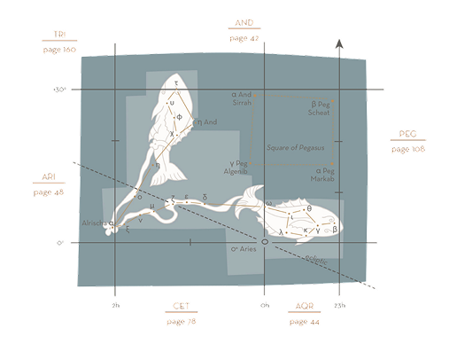

February - March
PSC — PISCIUM / THE FISHES
Pisces, the 12th zodiacal constellation, is difficult to discern because its stars are faint, none brighter than fourth magnitude. The figure consists of two fishes tied by a cord at their tails; the eastern fish swims vertically, in the general direction of the North Celestial Pole, while its companion strikes westward a few degrees above the equator and roughly parallel to it. A ring of five stars (ι, υ, γ, κ, λ), sometimes identified as the “Circlet”, lies immediately south of the Great Square of Pegasus (see page 108), and south and slightly east of the bright star Markab (α Peg). The head of the northswimming fish is about to buffet Andromeda (see page 42), and can be found just south of Mirach (β And). At the eastern edge of the constellation the cord that binds the fishes is marked by the star Alrischa.
Pisces culminates at midnight between late September and early October. It is widely visible, north or south of the equator, although in the Southern hemisphere, the figure begins to disappear for an observer at 57° South.


MAJOR STARS
α — Alrischa, 3.79
blue-white Reflecting the symbolic duality of the two fishes, Pisces contains a number of double stars of interest to astronomers. Alrischa is a binary system, comprising stars of magnitudes 4.2 and 5.2, with an orbital period of 900 years. The system lies around 100 light years away. Its name, which may originally have come from the Babylonian word riksu, is Arabic for the “cord”.
β — 4.53
blue-white The westernmost main star in the second fish. Owing to precession (see pages 17—19) this will become a marker-star for the March equinox and the start of the Tropical zodiac, c.2813 CE.
γ — 3.62
Yellow, the constellation’s lucida, by a fraction.
δ — 4.01
blue-white, The marker-star for the Aries equinox point of our era; it is just under 7° due north of the intersection of the ecliptic and the equator.
STARLORE
In Christian culture, Pisces has become identified with Christ as the “First Fish”, who was born after the March equinox point had precessed from Aries back into Pisces, marking the transition to a new “Great Age”.
The ancient form of Pisces is thought to have consisted of one fish. The Greek astronomer Eratosthenes (born 276 BCE) tells us that the origin of the fish symbolism is Derke, a Syrian goddess who was half-fish, half-woman.
The Romans compounded the idea of the fish-goddess in their myth of Venus and her son Cupid (in Greek myth, Aphrodite and Eros). They were startled by the monster Typhon, but Venus knew that they could escape by water. She grabbed Cupid and they plunged into the sea, where they were both transformed into fishes. To ensure that they did not lose each other they tied themselves together with a cord. In the heavens, we see mother and son, and the cord that binds them in love
